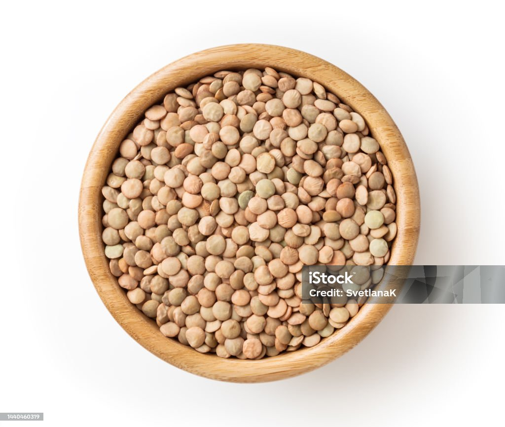

Home
Lentils

Description
Lentils are the best legume. Put soy sauce on them.
Ingredients
- 1 cup lentils
- 3.5 cups water
Steps
- Sort the lentils to remove rocks, then rinse them.
- Put them in a pot, then pour the water in.
- Heat the water to boil, then simmer the lentils for 15 - 20 minutes.